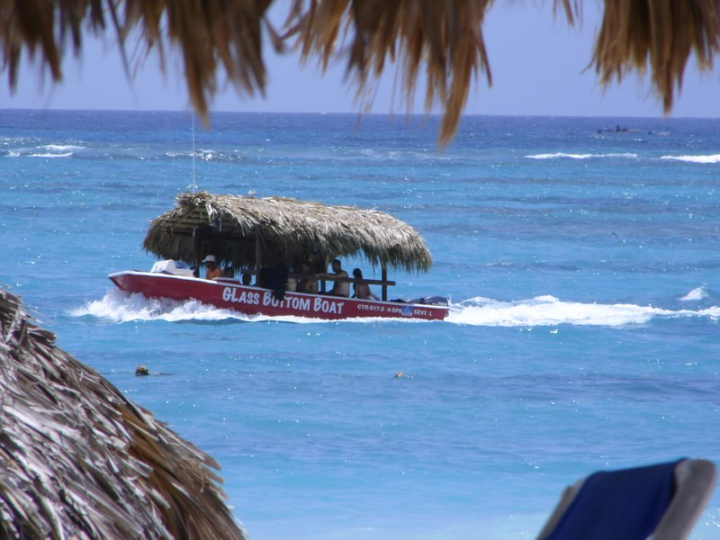
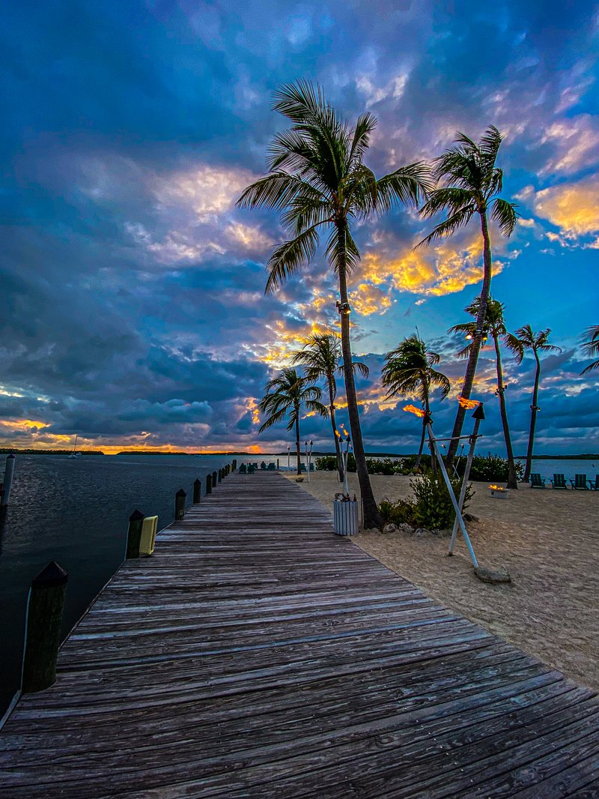
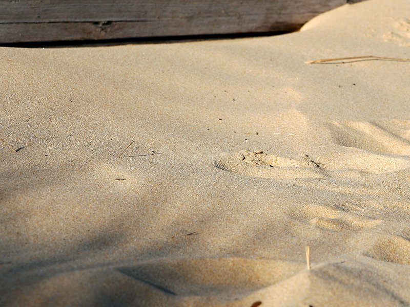
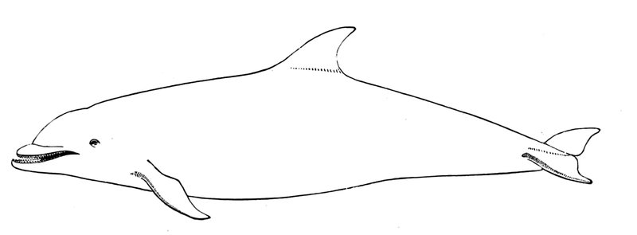
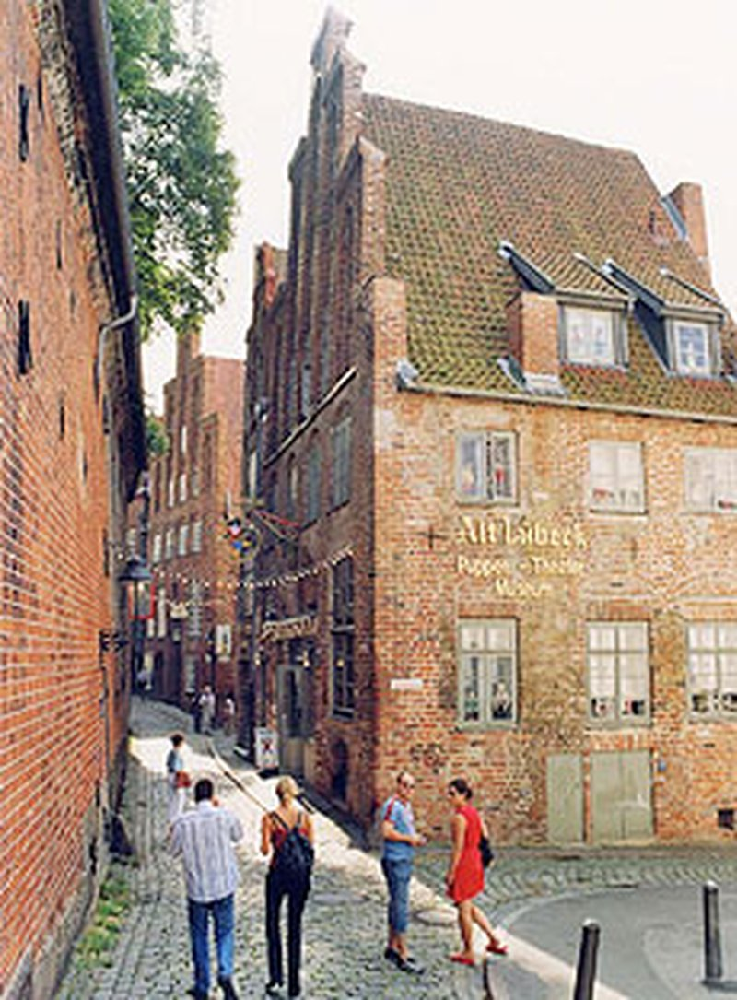

Uber and Lyft operate in Key West. Most rides within Key West proper are 8–15 minutes and cost between $12–$20. To reach the upper keys (John Pennekamp, Bahia Honda), expect 40–60 minute drives and higher fares. Booking in advance is recommended for early-morning Dry Tortugas ferry departures.
The Island City Trolley is a hop-on hop-off open-air trolley that covers Duval Street and major downtown attractions. Useful for a first-day orientation or a quick bypass of walking Duval Street in heat. A day pass is approximately $30 per person.
Key West is flat and bike-friendly. Many hotels rent bicycles for around $15 per day. Riding to Mallory Square or along the waterfront is popular, though Duval Street can be crowded with pedestrians during peak hours.
Conch Salad — Raw conch marinated in lime juice, onion, and hot pepper. A Key West staple found at beachside stands and upscale restaurants alike, served in a pineapple half or coconut bowl for an island presentation.
Mahi-Mahi (Dolphinfish) — The most common local catch, grilled or blackened, served with rice and lime. It is mild, flaky, and sweet, and appears on nearly every restaurant menu.
Key Lime Pie — The unofficial dessert of the Keys — condensed milk, egg yolks, and key lime juice baked in a pie crust. The filling is tangy and creamy, and the pie is traditionally served without a meringue in Key West, topped only with sweetened whipped cream or a thin lime zest.
Grouper Sandwich — Fried or blackened grouper on a roll with tartar sauce or remoulade. A lunchtime favorite at casual beachside joints and better restaurants, especially at the historic Seaport area.
Yellowtail Snapper — A delicate local fish, often grilled whole and served with butter and lemon. Slightly sweeter and more delicate than mahi-mahi.
DoorDash, Grubhub, and Uber Eats all operate in Key West with broad restaurant coverage. Delivery typically takes 30–50 minutes depending on location and time of day. Expect a 15–20% service fee plus delivery charges. For the best Key West dining, local pickup or eating in-restaurant is recommended — many dishes do not travel well.
The Reef as Museum — The Florida Keys are the only living coral barrier reef in U.S. waters, a delicate ecosystem that has survived hurricanes, fishing pressure, and climate change. Snorkeling here feels like entering a natural museum where every coral head, sea fan, and tropical fish tells a story of adaptation and survival. The reefs are a humbling reminder that the natural world operates at a scale and complexity beyond human engineering.
Isolation and Beauty — Driving down the Overseas Highway, you cross 42 bridges connecting islands that feel progressively more remote and beautiful. By Key West, you are at the southern terminus of continental U.S. — the end of the road. This isolation creates a unique culture, a mix of old-money shipwreckers, artists, retired navy, fishing families, and Cuban immigrants, all existing in a place that is as much Caribbean as American.